ALC Nedal lamp posts
ALC (Aluminium Lighting Company) is a UK lamp post company who install Nedal Aluminium Lamp posts (from the Netherlands).
Nedal lamp posts look tottally awesome, they are by far the best modern lamp post.
All Nedals have the date marked on the door (the 14 is the date 2014).
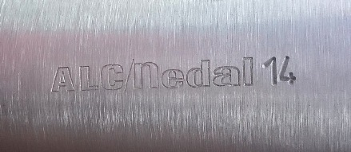
And now on to my ALC Nedal lamp post guide...
2000s
ALC first started in the early 2000s. The lamps used were Philips lamps, the design of these dates back to the late 80s. It looks rather odd seeing these very modern posts with outdated lamps.
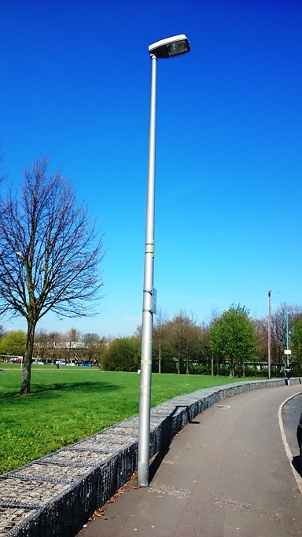
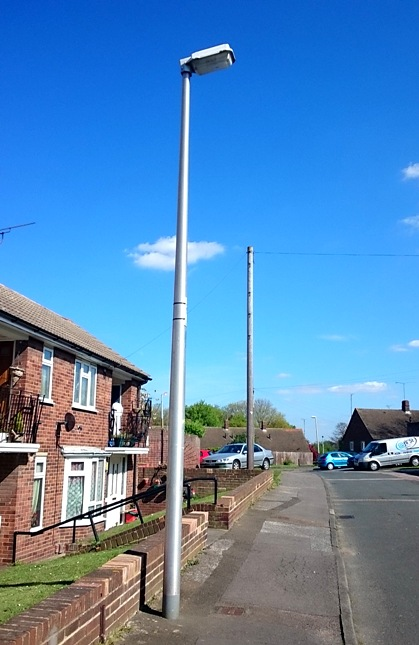
late 2000s to early 2010s
These now have the updated designs of lamps.
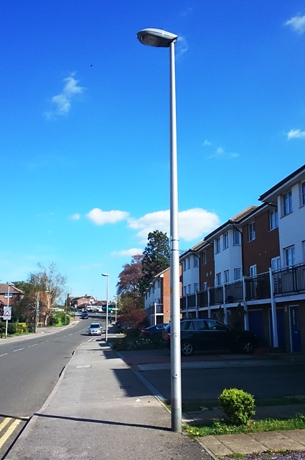
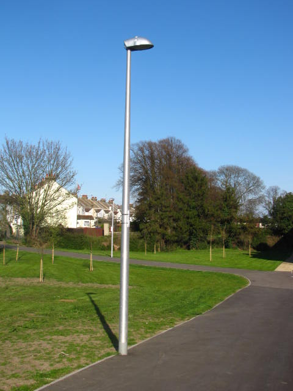
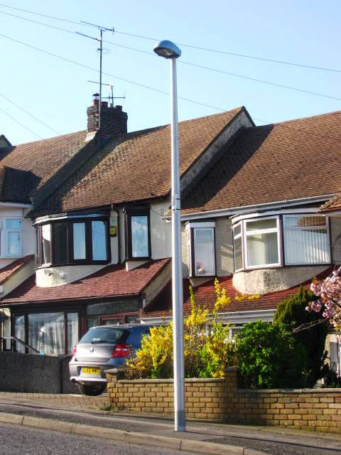
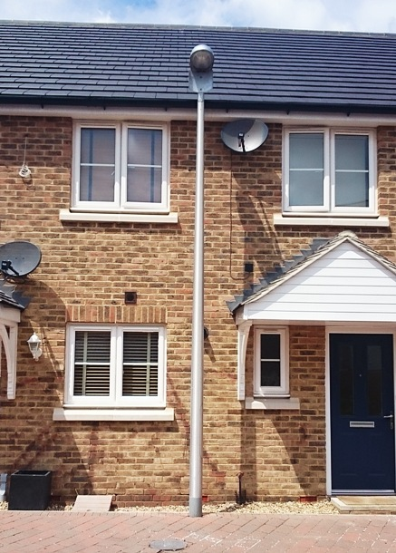
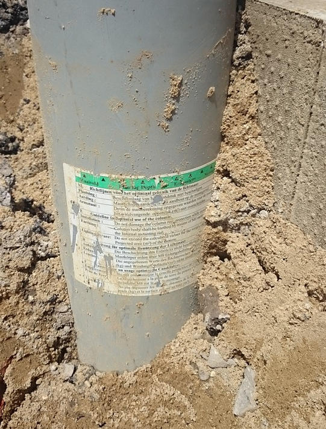
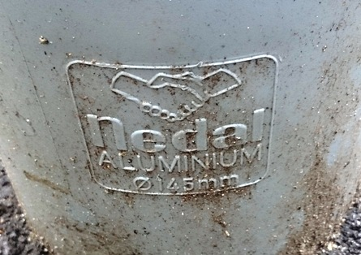
Nedal with decorative lamp
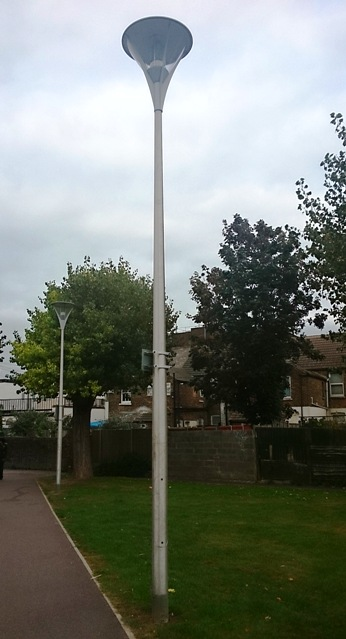
Swing down Nedal
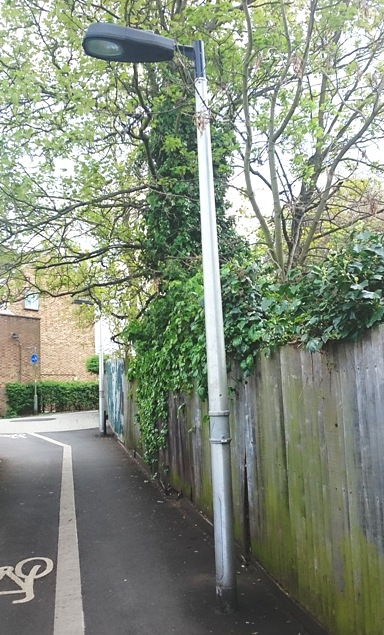
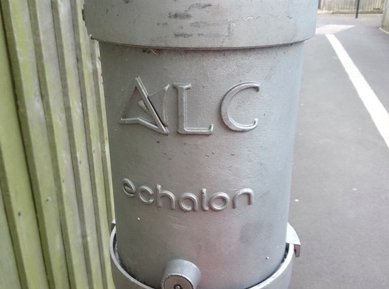
Swing down Nedal painted black
Aluminium looks better unpainted.
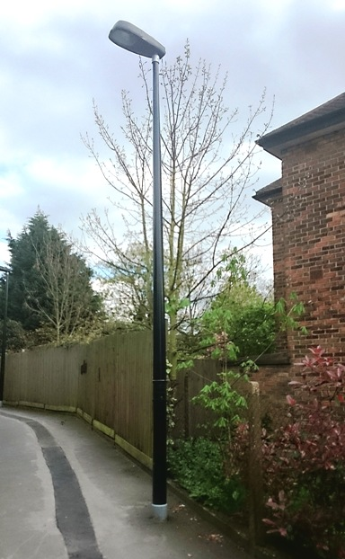
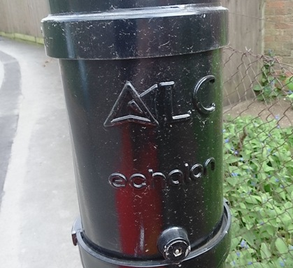
Thorlux Lighting
Custom Nedal for Thorlux Lighting.
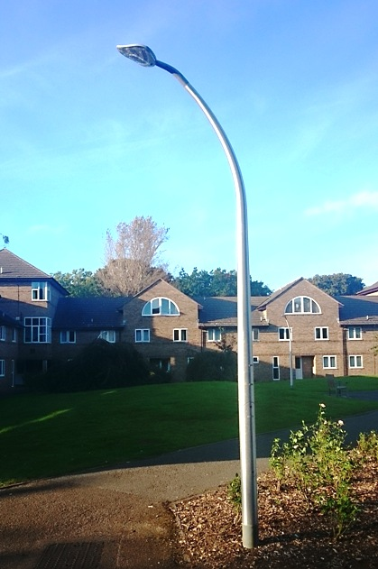
Mini Nedals!
These are located in what I call a "Crapton", the many new housing estates being built across the UK. These new houses are very cheaply built, often they are only brick on the outside, and the arcetecture is ugly. Why can't they build new houses to look modern?
These new houses are very small, but to trick you into thinking that they are bigger than they are. They make everything a scaled down version of a larger house. So the windows are small, the rooms are small, the detailing on the houses is small, and as long as there isn't anything to the scale of the real world to be seen, people won't notice that the houses are small. The builders at the new housing estate in Wainscott (Medway, Kent) have gone as far as putting in tiny lamp posts!
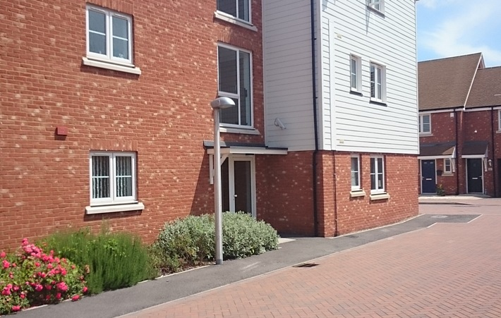
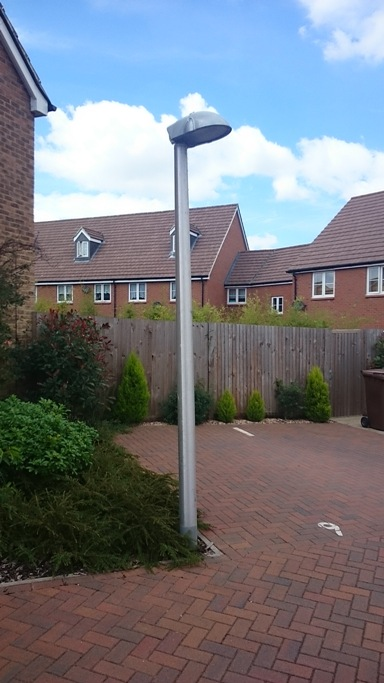
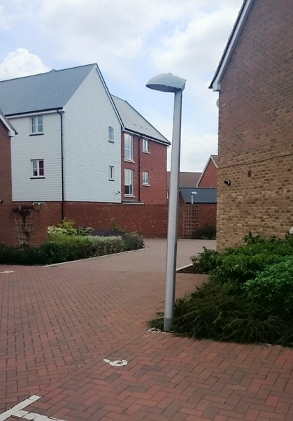
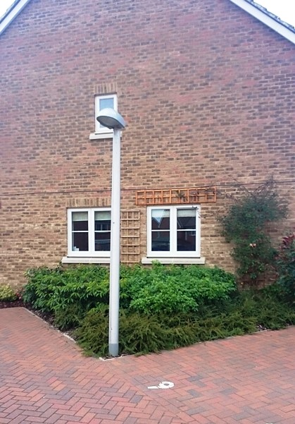
PRESENT DAY
These now have LEDs. The best of which is the Philips Stela.
The Philips Stela is a very modern and a great bit of design work. Now that lamp posts use LEDs the lamp head can now be made very thin. The Philips Stela is by far the best out of the large range of LED heads on the market, it is just looks so awesome.
When the Philips Stela is combined with a modern Nedal lamp post the overall effect looks amazing.
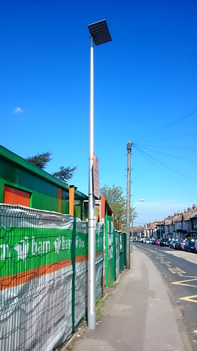
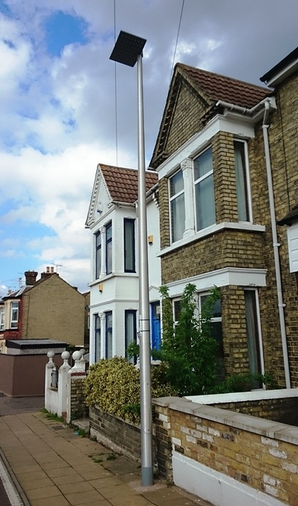
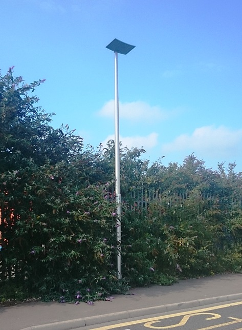
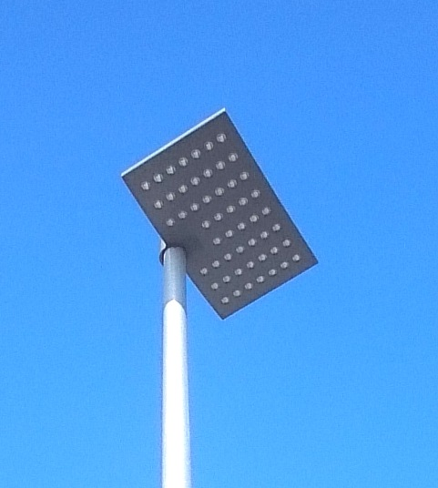
So we have seen the best LED head, now lets take a look at the worst.
The worst has got to be this. There has been no effort put into the shape of the lamp. It is just a bog standard lamp (designed to fit a bulb) which has had LEDs put in it. This might look like a retro fit but its not, its a new LED head. Very half harted attempt design work.
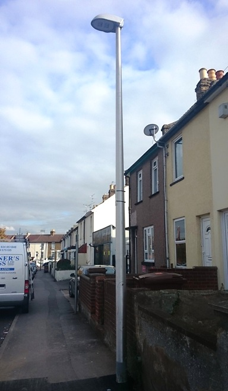
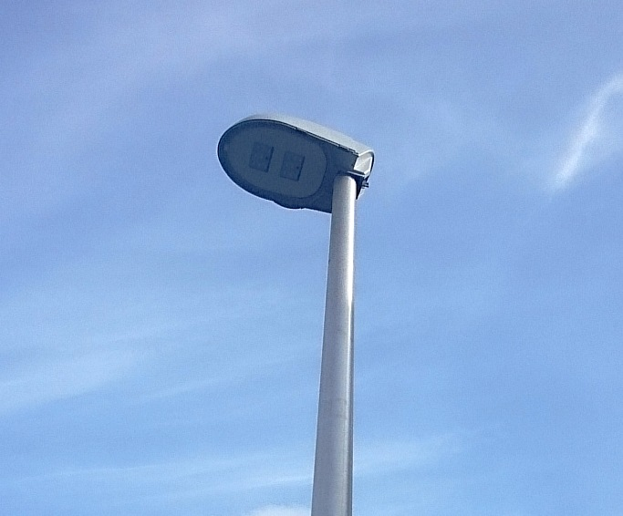
And now here are some other designs of LED heads (Also by Phillips). These look OK but are not as good as the Philips Stela.
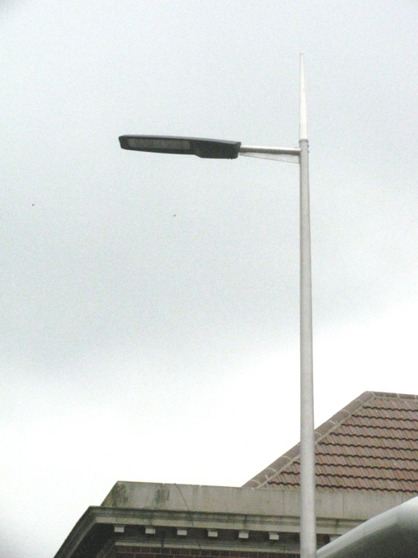
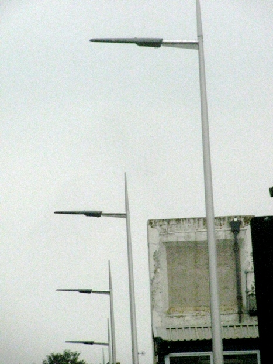
Click here to go to the Beno lamp post guide homepage